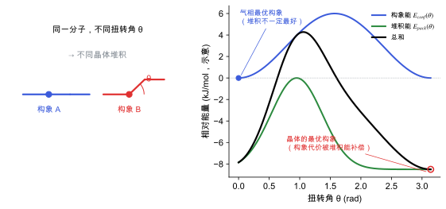

构象多晶型与构象代价
同一分子以不同构象结晶时，晶体里的分子往往不是气相最稳定的那个构象；这一条讲“构象代价”和“堆积收益”怎样竞争，以及为什么结构搜索与能量排序里必须显式处理它。
直观阅读需要
- 分子晶体与分子间作用：分子晶体靠什么结合
- 能量景观与多晶型：多晶型是能量面上的不同盆地
完整推导还需要
- 色散校正：堆积能的主要贡献
- 晶体结构预测：搜索与排序：候选结构怎么排序
只是提示，不需要先读完才能往下看。
直觉直观解释
一个分子在晶体里不是刚性的：它的扭转角、环的褶皱、取代基的朝向都可以变。气相最稳定的构象不一定是最容易堆积的构象。
两件事在竞争：
- 构象能 E_{\mathrm{conf}}：把分子从气相最优构象扭到另一个构象要付的能量。通常是一个以扭转角 \theta 为变量的周期性势，最小在某个 \theta_0。
- 堆积能 E_{\mathrm{pack}}：这个构象在晶格里能放得多密、相互作用多强。它偏好另一个构象，因为那个形状更适合紧密堆积。
晶体里最终的构象由两者之和决定，而不是各自的最小值。图里用玩具函数画了这个竞争：蓝线的最小在 \theta=0，绿线的最小在 \theta \approx 0.95，黑线（总和）的最小落在两者之间、偏向绿线一侧。

| 符号 | 是什么 | 图里对应哪部分 |
|---|---|---|
| \theta | 分子内的扭转角（构象坐标） | 横轴；左图红色圆弧标出的角 |
| E_{\mathrm{conf}}(\theta) | 构象能，相对气相最优构象 | 右图蓝色曲线 |
| E_{\mathrm{pack}}(\theta) | 堆积能，随构象变化的部分 | 右图绿色曲线 |
| 总和 | E_{\mathrm{conf}} + E_{\mathrm{pack}} | 右图黑色粗线 |
| 蓝点 | 气相最优构象 | 横轴 \theta=0 处 |
| 红圈 | 晶体里的最优构象 | 总和曲线的极小处 |
注意图中红圈和蓝点不在同一位置：气相最稳定的构象不是晶体里最终采用的那个。这就是“构象多晶型”问题的核心。
定义与公式数学与推导
能量的分解
对每个候选晶体结构，把总能量写成两部分：
其中 E_{\mathrm{conf}} 是分子从气相最优构象扭到晶体中构象所用的能量（有时叫 conformer energy penalty）；E_{\mathrm{pack}} 是把该构象的分子按特定方式排布时，分子间相互作用的净贡献（含色散、静电、氢键，见 色散校正）。
E_{\mathrm{conf}} 通常可以写成扭转势
其中 V_n 是第 n 阶傅里叶系数；\gamma_n 是相位；求和遍历主要的傅里叶项。这是分子力场里标准扭转项的形式，也可以用 DFT 的约束优化扫出来。
为什么这件事对结构预测是硬的
- 构象空间与晶体空间是乘积：多一个可旋转的键，候选构象数就成倍增长，而每个构象还要单独做晶格搜索。
- 误差尺度重叠：常见的 DFT 色散校正方法之间，多晶型能量差的不确定度与构象代价常常在同一量级，排序对方法和设置敏感 [Nyman & Day 2015] [Beran 2016]。
- 构象在晶体里会被“压”：进入晶格后，分子内几何也会因分子间作用而变形，气相构象能只是一个近似起点。
在本研究线里的样子对应与边界
- 搜索阶段：先用分子力学或 MLIP 生成候选，允许扭转角在合理范围内变化（见 晶体结构预测：搜索与排序）；固定一个构象做全空间搜索会漏掉整类解。
- 排序阶段：对每个候选按上式分解能量，检查排名靠前的是不是“构象代价很高”的那一类；如果是，要复核堆积能那一项（色散、静电）有没有算对。
- 与实验对照：实验上能测的是晶格参数、分子几何（X 射线/中子衍射、电荷密度），这些可以直接验证某个候选的构象对不对，而不只是能量排名。β-甘氨酸的压电复现里，不同多晶型的构象差异首先体现在晶胞与分子几何上（见 压电张量、收敛测试）。
常见坑对应与边界
- 把气相最优构象当成晶体的构象：搜索时冻结构象，会系统性地漏掉构象多晶型。
- 构象能算错基准：E_{\mathrm{conf}} 必须相对同一分子、同一方法下的气相最优构象，方法换了基准就变了。
- 忽视分子内弛豫：用刚性分子做初筛可以，但最终排序要让分子内几何弛豫。
- 能量分解当成精确可加：构象能与堆积能在晶体中互相影响，上面的加法是近似，不是严格分解。
- 只报一个能量：不同泛函/色散校正给出不同排序时，应该把差异报出来（见 预测的误差来自哪里），而不是挑一个。
检验自己对应与边界
参考资料
论文Cruz-Cabeza & Bernstein 2013
A. J. Cruz-Cabeza, J. Bernstein, Conformational Polymorphism, Chem. Rev. 114, 2170-2191 (2014)
尚未实际查阅，目前只是拟查阅书目
论文Cruz-Cabeza et al. 2015
尚未实际查阅，目前只是拟查阅书目
论文Nyman & Day 2015
尚未实际查阅，目前只是拟查阅书目
论文Beran 2016
尚未实际查阅，目前只是拟查阅书目
分类晶体与固体 · 概念 · 研究线：结构预测与能量景观 · 状态：草稿